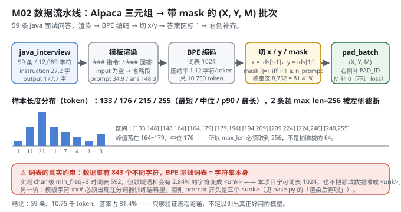
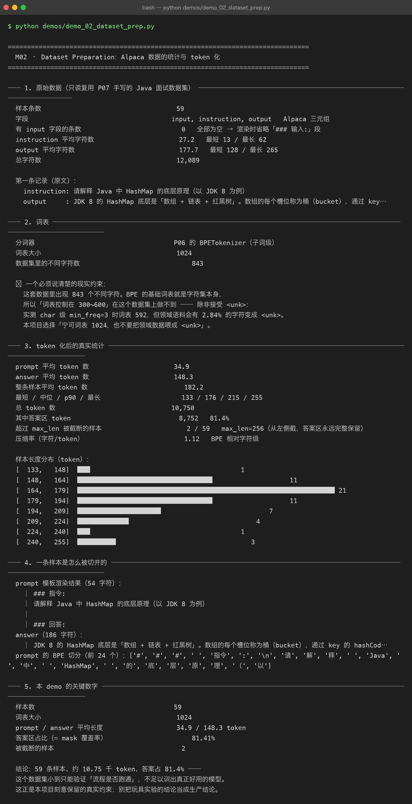

Milestone 02 — Dataset Preparation：59 条问答，是怎么变成 (X, Y, M) 的
M01 证明了"值得微调"（1/8.5 的参数换 loss 追平），但那 60 步喂进去的是什么，还没交代。这一层把数据流水线摊开：P07 的 Alpaca 三元组 → 渲染成指令模板 → BPE 编码 → 切成 (x, y, mask) → 右侧补齐成批次。
这是整条主线上唯一一次"纯粹处理数据"的环节，但后面每一章的结论都受它约束：答案区占 81.41% 决定了 mask 的收益（M03），词表 1024 决定了困惑度只能在同分词器内部比较（M09），59 条的规模决定了所有结论都只能叫"流程跑通"。
纯 numpy 手写，没有 datasets 库没有 DataCollator —— pad_batch 就是十几行 numpy，每个统计量都是 encode 出来数出来的。
1. Why：为什么必须自己走一遍这条流水线
三个必须当场定死的量，框架不会替你决定：
max_len取多少。 拍脑袋写 64 是常见做法（很多教程的建议），但实测 Java 数据平均一条 182.2 token、中位 176、最长 255。取 64 会让绝大多数样本的答案被整段切掉，"只在答案区算 loss"就变成一句空话。- 词表取多大。 建议口径常写"300~600"，但这份数据里有 843 个不同字符，而 BPE 的基础词表就是字符集本身 —— 压到 600 必然引入
<unk>。 - 截断该截哪头。 样本超长时，截开头还是截结尾？答案区永远不能被切，否则监督信号直接丢失。
2. Design：渲染 → 编码 → 切 mask → 补齐
模板（src/ft/sft_data.py:55）：
### 指令:
{instruction}
### 输入:
{input} ← input 为空则整段省略
### 回答:
{output}<eos>
└──── prompt ────┘└──── answer ────┘
mask = 0 mask = 1本数据集 59 条的 input 全部为空（实测 有 input 字段的条数 = 0），所以渲染时整段省略「### 输入:」。
切 x / y / mask（build_sft_examples）： x = ids[:-1]，y = ids[1:]，而 mask[i] = 1 当且仅当 i + 1 >= n_prompt —— 因为 y[i] 对应的是 ids[i+1]。这个 off-by-one 是整章最容易写错的地方，写错了模型会在 prompt 的第一个 token 上就开始算 loss。
截断方向： 超长样本从左侧截断（丢 prompt 开头），保证答案区永远完整留在窗口里。prompt 少看几个字无所谓，答案被截断才是真的丢监督信号。
分词器（base.py）： 在「通用语料 + 渲染后的领域语料」的并集上训 BPE。基座没见过领域词没关系（那正是要微调的原因），但分词器必须认识它们。

3. Real-run evidence（来自 demos/out/demo_02_dataset_prep_terminal.txt）
原始数据（只读复用 P07 的 data/java_interview.json）：
| 项 | 实测值 |
|---|---|
| 样本条数 | 59 |
| 字段 | input, instruction, output（Alpaca 三元组） |
有 input 的条数 | 0（全部为空 → 渲染时省略「### 输入:」段） |
| instruction 字符数 | 平均 27.2（最短 13 / 最长 62） |
| output 字符数 | 平均 177.7（最短 128 / 最长 265） |
| 总字符数 | 12,089 |
token 化后的真实统计：
| 项 | 实测值 |
|---|---|
| prompt 平均 token | 34.9 |
| answer 平均 token | 148.3 |
| 整条样本平均 | 182.2 |
| 最短 / 中位 / p90 / 最长 | 133 / 176 / 215 / 255 |
| 总 token | 10,750 |
| 答案区 token | 8,752（81.4%） |
| 被截断的样本 | 2 / 59（max_len=256，从左侧截） |
| 压缩率（字符/token） | 1.12（BPE 相对字符级） |
一条样本是怎么被切开的（真实渲染结果）：
prompt 模板渲染结果（54 字符）：
│ ### 指令:
│ 请解释 Java 中 HashMap 的底层原理（以 JDK 8 为例）
│
│ ### 回答:
answer（186 字符）：
│ JDK 8 的 HashMap 底层是「数组 + 链表 + 红黑树」。数组的每个槽位称为桶（bucket），…
prompt 的 BPE 切分（前 24 个）：
['#', '#', '#', ' ', '指令', ':', '\n', '请', '解', '释', ' ', 'Java', ' ', '中', ' ', 'HashMap', …]注意 ### 被切成三个独立的 '#' 而不是一个 '###' token —— 这是 BPE 合并次数有限的结果，也是下一节那个坑的伏笔。

4. 踩坑 / 反直觉发现
4.1 模板字符 ### 不在分词器语料里 → prompt 开头是三个 <unk>（实测踩过）
第一版直接拿通用语料训 BPE 就去编码领域数据，模型看到的 prompt 开头是三个 <unk> —— 模板白写了。消息量最大的三个字符（指令/回答的分界标记）被丢了。
修法写在 src/ft/base.py:93：_java_corpus() 必须用 render_example 渲染后的文本去喂分词器，而不是直接拼 instruction + input + output。这件事光看 vocab_size 是发现不了的（词表照样是 1024），只有把切分结果打出来才看得见。
这条经验的通用形式：分词器的训练语料必须覆盖你模板里出现的每一个字符，否则模板在模型眼里是乱码。
4.2 "词表 300~600" 在这个数据集上做不到（实测）
数据集里的不同字符数 843
⚠ BPE 的基础词表就是字符集本身，所以「词表控制在 300~600」做不到 —— 除非接受 <unk>：
实测 char 级 min_freq=3 时词表 592，但领域语料会有 2.84% 的字符变成 <unk>。本项目选择「宁可词表 1024，也不要把领域数据喂成 <unk>」。理由很实在：2.84% 的 <unk> 落在答案区，等于每一百个监督信号里就有三个是噪声，而词表从 592 涨到 1024 只多一点点参数（本项目基座才 230,656，其中 65,536 就是词嵌入）。
4.3 该截哪一头，是个有方向性的决定（实测 2 条被截）
max_len=256 下有 2 条样本超长。如果图省事从右侧截（ids[:max_len]），答案的尾巴会被整段丢掉 —— 而那正是 mask=1 的区域。build_sft_examples 选择从左侧截（ids[drop:]），并同步扣减 n_prompt，保证 mask 边界跟着移动。
4.4 这个数据集小到只能验证流程（必须诚实标注）
59 条、10.75 千 token。demo 输出的原话：
这个数据集小到只能验证「流程是否跑通」，不足以训出真正好用的模型。
本项目刻意保留这个真实约束 —— 后面 M06 的超参扫描、M09 的评估结论，全部带着这个前提读。把玩具实验的结论当生产结论，是这类项目最常见的翻车方式。
5. Conclusion
- Alpaca 三元组渲染后切成
(x, y, mask)，核心是那个 off-by-one：mask[i] = 1当且仅当i + 1 >= n_prompt。 - 59 条 → 10,750 token，答案区 8,752 = 81.41% —— 这个比例直接决定 M03 的 mask 收益。
max_len必须取 256（实测中位 176 / 最长 255），超长样本从左侧截，答案区永远完整。- 词表必须 1024：843 个不同字符，压到 600 会带来 2.84%
<unk>。 - 分词器语料必须包含模板字符：否则
###变成三个<unk>，模板白写 —— 且不会报错。 - 手写实现的意义：
pad_batch十几行 numpy 就把"变长 → 定长 + mask"讲透了，也让你能一眼看出截断方向、mask 边界这些框架替你藏起来的决定。
6. Code map
| 文件 | 职责 |
|---|---|
src/ft/sft_data.py | load_java_records（只读 P07 数据）/ render_example（模板渲染）/ build_sft_examples（切 x,y,mask + 左侧截断）/ build_lm_examples（通用语料，mask 全 1）/ pad_batch / dataset_stats / visualize_example |
src/ft/base.py | build_tokenizer（通用 + 渲染后领域语料的并集）、_java_corpus()（踩坑 4.1 的修法）、_build_pretrain_examples |
src/ft/paths.py | ensure_p07_dataset()：只读校验 P07 数据集存在，绝不修改 |
demos/demo_02_dataset_prep.py | 5 节：原始数据 / 词表 / token 统计 / 单样本解剖 / 关键数字 |
demos/out/demo_02_dataset_prep_terminal.txt | 本章所有数字的来源 |
assets/dataset-prep.svg | 本章数据流水线图（含长度直方图与词表约束） |
7. Version line
v0.1 → v0.2，M02 数据流水线落地。实测：59 条 / 10,750 token / 答案区 81.41%，prompt 34.9 / answer 148.3 token，截断 2 条，词表 1024（843 个不同字符，压到 600 会有 2.84% <unk>）；并定位「模板字符 ### 未进分词器语料 → prompt 开头三个 <unk>」这一静默失败。纯 numpy、无 torch/transformers/datasets。配图 1 张手写 SVG + 1 张真实终端截图。